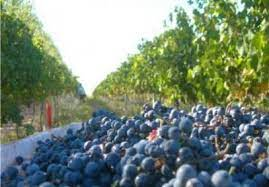

Neuquén
En la provincia de Neuquén existen viñedos y vinos desde ya hace varias décadas pero no lograron trascender sino hasta la aparición de la "Bodega del Fin del Mundo" Con suelos de excelente calidad para el desarrollo de la vid, una amplitud térmica mayor a los 20° y un régimen de lluvias escaso, esta nueva región, seguramente va a dar que hablar en los próximos años. El clima frío y los constantes vientos favorecen la sanidad de los viñedos, por lo que son prácticamente innecesarios los tratamientos con insecticidas. Seguramente por sus condiciones agro climáticas, las cepas nobles como el Malbec, Merlot y Pinot Noir van a encontrar en esta región un terruño ideal para expresarse.

- Bodega del Fin del Mundo - Ruta Provincial 8 - Km 9 - San Patricio del Chañar, Neuquén - Tel: 485-5004 / 5083
- Bodega NQN - Ruta Prov.l 7 - Calle 15 - San Patricio del Chañar, Neuquén - Tel: +54 299 489-7500. Visitas guiadas, degustaciones
- Del Añelo - Rivadavia 340 - Añelo, Neuquén - Tel: +54 299 490-4242. Visitas guiadas, degustaciones
- Bodega Familia Grittini - San Patricio del Chañar, Neuquén - Tel: +54 299 447-3014. Visitas guiadas, degustaciones
- Familia Schroeder - Calle 7 Norte - San Patricio del Chañar, Neuquén - Cel: +54 9 299 5086767. Visitas guiadas, degustaciones
- Valle Perdido - R. Prov 7 Picada 6 - San Patricio del Chañar, Neuquén - Cel: +54 9 299 4385420. Visitas guiadas, degustaciones